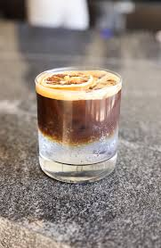
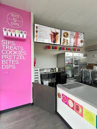

Premium Matcha Maiko - Amazing matcha drinks in town!
Premium Matcha Maiko - Amazing matcha drinks in town!

Haan Coffee - A calming brew for the perfect reset. XO Coffee - Our latest location offering delicious coffee.
XO Coffee - Our latest location offering delicious coffee.
 Coffee Shop - A cozy spot to relax and enjoy your coffee.
Coffee Shop - A cozy spot to relax and enjoy your coffee.

Sips & Dips - A place to taste and savor new flavors!